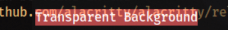
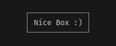

lacritty
lacritty
Alacritty Version 0.10.0 Release
Jan 22, 2022
Prebuilt binaries can be found in the
GitHub release.
Packaging
- New `extra/alacritty-msg.man` manpage for the `alacritty msg` subcommand
- Minimum Rust version has been bumped to 1.53.0
Added
- Option `colors.transparent_background_colors` to allow applying opacity to all background colors 
- Support for running multiple windows from a single Alacritty instance (see docs/features.md)
- Urgency support on Wayland via `xdg_activation_v1`
Changed
- `ExpandSelection` is now a configurable mouse binding action
- Config option `background_opacity`, you should use `window.opacity` instead
- Reload configuration files when their symbolic link is replaced
- Strip trailing whitespaces when yanking from a block selection
- Display area keeps history position when viewport is cleared
- Commands spawn from the current directory of the foreground shell in Unix-like systems
- Remove trailing newline from strings taken from hints or simple/semantic selections
-
Builtin font is now used for box drawing characters from `U+2500` to `U+259f`

- Logs now print the time since startup instead of the local time
Fixed
- Line indicator obstructing vi mode cursor when scrolled into history
- Vi mode search starting in the line below the vi cursor
- Invisible cursor with matching foreground/background colors
- Crash when hovering over a match emptied by post-processing
- Crash when the vi cursor is on the scrollback and viewport clear is invoked
- Freeze when the vi cursor is on the scrollback and scrollback clear is invoked
- Vi cursor on topmost of the display moving downward when scrolled into history with active output
- Input lag on Wayland with Nvidia binary driver
- Crash when hovering the mouse over fullwidth characters
Removed
- Wayland client side decorations were simplified